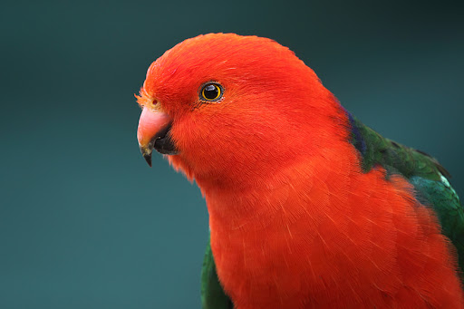

Походження
Такі красені в природних умовах живуть в Австралії, у прибережній південно-східній частині континенту. Населяти вони віддають перевагу лісовим територіям, де є густий підлісок, а також великі парки, сади – це до настання сезону розмноження. У період гніздування вони перебираються до лісів з вологим кліматом, де є яри та зарості евкаліпта.
У природних умовах королівські папуги схильні до кочового способу життя. Проживають вони парами чи невеликими групами. Тільки після гніздування вони збираються у зграю до 50 особин. Період активності у них – ранок, коли вони збираються для годування, і вечір – з відходом спеки.
Особистість
Маючи такі ефектні зовнішні дані, як у королівського папуги, можна більше не мати жодних талантів. Але це не так. Ці птахи теж дуже талановиті. Їх можна навчити казати. Ось тільки співочим даром вони обділені. Замість співу видають своєрідний, тільки їм притаманний крик. Вони легко приручаються, якщо взяті молодими. Якщо приділяти цьому птаху достатньо часу, він розкриє всі свої таланти та здібності.
Здоров'я
У цих птахів дуже норовливий (складний) характер, вони схильні до незалежності. Пернаті прискіпливо вибирають собі друга, але це не означає, що до решти птахів вони будуть ворожі, швидше, байдужі. Цей факт з часом напевно впаде вам у вічі. Вивчаючи своїх господарів, птахи поступово знаходять їх «слабкі місця» і намагаються за певних обставин висловити своє обурення чи схвалення. Якщо вихованець прийняв когось із членів вашої сім'ї і став йому другом, то саме йому і діставатиметься вся любов і ласка папужки.
Грумінг
Оскільки королівські папуги — досить великі та громіздкі птахи, утримувати їх раціональніше у просторих вольєрах. Вони добре розмножуються. У маленьких же клітинах пташки починають погано почуватися. Пернатих можна містити парами та поодинці. Вам буде корисно почитати про те, як налагодити стосунки з папугою та як навчити його говорити. Розмір житла має бути мінімум 1,5х2х2 метра, плюс зона вигулу в літній сезон - 1,5-6-2 м. Будиночок має бути зручним для проживання в ньому папуг, а також для збирання. Найбільш оптимальний варіант - прямокутна триярусна споруда, в якій багато вільного місця для польоту та стрибків.